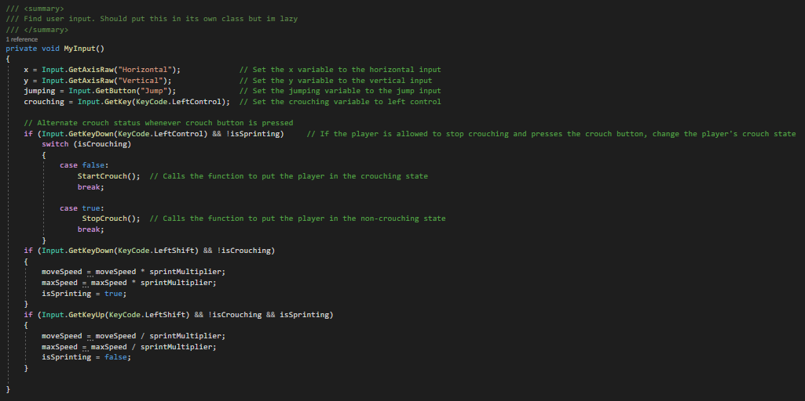
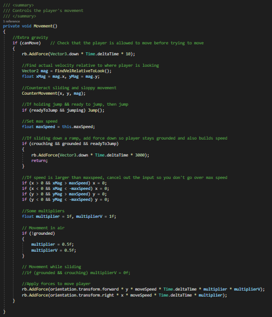
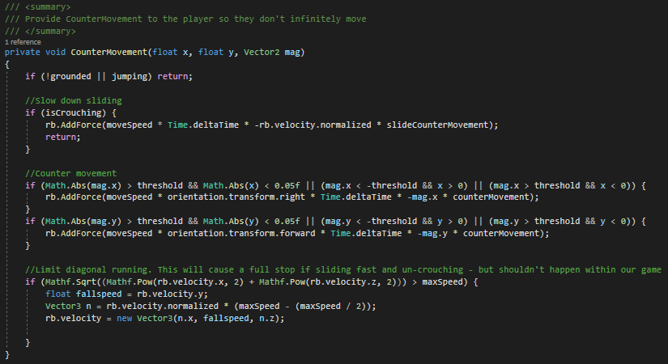

Overview
Description of what Project Stealth was Project Stealth is a 3D stealth puzzle game where the player can navigate spaces, complete environmental puzzles and make use of their skills and environment to avoid enemies. My role in this team was as a programmer; designing, developing and maintaining numerous scripts and systems throughout development.
This game was made within a team of 6 throughout our first year of University. This was our first major game project. This team consisted of 2 programmers, 2 designers, and 2 artists. I took the role of lead programmer throughout development, helping to design, develop and maintain all scripts and systems made for the project. Some of the main systems I had most impact on was the main physics-based movement, enemy AI behaviours, and other miscellaneous scripts Talk about team composition and what my main aspect of development were
Example Systems + Scripts
When designing the main movement script, we wanted it to be physics based so we could achieve a more realistic feel for the player. This controller allowed the user to walk around, run, crouch and slide. All features we would want to make use of within a stealth game.
Below is the first part of the movement script, where I took the user's inputs and applied the appropriate reaction, getting these inputs from Unity's input system.
Below is the main movement function. This controls and applies all movement to the player. Fristly, it find the player's velocity relative to the direction the player is looking, then applies the relevant CounterMovemnt, passing these velocity values. We then check whether the player is wanting to jump, and apply the jump if needed, if I was writing this script again I would separate this into it's own method to be called directly from the button press. We then check whether the player is crouched, ensuring to add a sliding force so they can slide down ramps and steep declines. The method then checks whether we have reached the max speed, ensuring more force is not added to the player if the maximum speed has already been reached. Finally, in this method, a directional force is applied to the player in the input direction.
This method applies an apposing force to the player, simulating friction. Firstly, it returns out of the function is not grounded since this is to simulate the floor friction. Additional counter movement is then applied if sliding. After this, the main counter movement is applied to the player in the opposite direction of movement. I then wrote a small if statement to limit diagonal running speeds, setting the player's velocity directly if travelling too quickly
There are many different things I would change throughout this script to improve it, such as adding the hardcoded values as variables, separating large methods into smaller ones to keep the code cleaner and more organised, and other general improvements.
The drones roaming around the levels in the game were to be a big obstacle to the player, having them patrol given areas, go towards the player if they were seen for a short amount of time, and getting effected by the hack feature available to the player. This drone made use of Unity's NAvMesh and NavMeshAgents.
Below are some of the main methods within the AI script, controlling which patrol point the drone is to move to and changing the drone's active behaviour state. The
MoveBetweenPoints method controls which point the AI is actively moving towards, changing to the next point whenever it reaches this point and circling back to the
initial point when the final destination is reached.
The Investigate method changes the dronestate to investigating and makes the drone search the last known location of the player.
The HackDrone method handles the drone getting hacked, changing it's behaviour depending on whether it is controllable on not.
This switch statement is found within the update method, controlling what the drone is doing depending on it's behaviour state.
If the dronestate is patrolling, it calls the MoveBetweenPoints function so it can continue patrolling its designated area.
If the dronestate is investigating, it checks whether it has reached the player's last known position, in which when it does it will continue patrolling if the player
isn't seen again.
If the dronestate is hacked, the drone is swtiched into it's hacked state, allowing the player to control it if applicable, and keeping the drone hacked for an amount
of time.
What I learnt from this project
From this project, I learnt many things. For example: how to better work in a professional working environment, how to work harmoniously with a team of developers of different specialisms, general coding improvements, how to create basic AI behaviours, and how to better enable the player to interact with the environment of the game.
Firstly, throughout development, I had to work as a team with many other specialisms, something I hadn't done before, which helped me better understand the jobs of these different specialisms and how to help manage the workflow of the group, coming together for meetings to discuss and develop our ideas and how we were going to bring them to life. Through doing this project, I now better understand how I, as a programmer, can work with different specialists to ensure we all can work cohesively to produce high quality work and a polished final game.
Through developing scripts with other developers, I gained a greater understanding of how to work with others to produce a number of different systems. This meant I had to make sure to have great readability and maintainability in the scripts so everyone could easily understand and work on these different parts of the game when needed. This also meant I had to develop great communicational skills so that everyone knew what everyone was working on so that we wouldn't have conflicts whilst using version control. Working on this game also helped me develop an understanding of how I, as a programmer, can help the player interact with the environment smoothly, through simple means such as opening doors, or how they interact with the AI within the game.